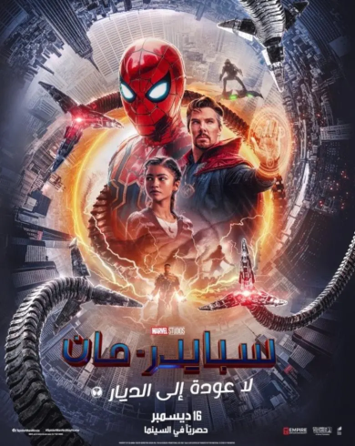

آيرون مان أو الرجل الحديدي هو فيلم من إنتاج عام 2008، يستند إلى إحدى قصص مارفل كومكس الكرتونية المصورة التي تحمل نفس الاسم. الفيلم هو الأول ضمن عالم مارفل السينمائي

هو فيلم بطل خارق أمريكي، مستوحى من شخصيات قصص مارفل المصورة المنتقمون.العمل هو رابع أفلام المنتقمون والثاني والعشرين ضمن عالم مارفل السينمائي.
